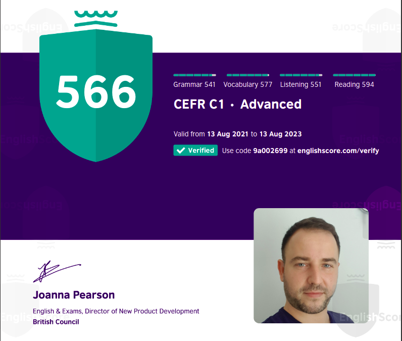
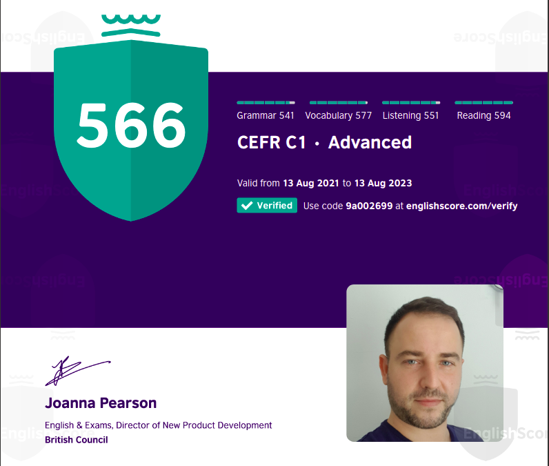

For me programming is a fascinating area, one that gives you a great sense of accomplishment when creating components, apps, websites or just getting stuff to work as intended. Therefore, a few years ago I decided to follow a carreer as a developer (or come back to something that I've always loved). Being an enthusiastic learner with creative and problem-solving capabilities and working with an amazing team in a professional environment allowed me to aquire a lot of useful insights and experience in programming. I became confident that I could pick any new libraries/frameworks required and also had a glance at the financial world and the overall activity in an office.
Experience:
Aug 2021 - Sept 2020: Junior developer at Enhance Group Limited, Jersey
- maintained and improved their core application, Mosaic, following agile and scrum principles
- added new features or refactored and reviewed code written by other developers (React, Typescript, Ruby on
Rails, gitHub, etc.)
- Enhance's website brand refresh (React, Ruby on Rails). See here
- Enhance's blog brand refresh (HubL). See here
2019: Graduated from Digital Jersey, an industry validated coding programme
- worked in small teams on real life projects, using HTML, CSS (Flexbox, Grid,
Bootstrap), Sass, Ruby, Ruby on Rails, Docker (Docker-compose), MySQL, Github, Webpacker, Javascript, some
Jquery and DOM manipulation etc. We've also collaborated well as a team, always talking and planning ideas
(usually with the help of our mentors) and pushing our work to Github without serious issues or bug fixes.
This video below contains some of the projects from that time:
2008 - 2010: Freelance and other
- created a bunch of websites for small businesses by using Wordpress or Joomla. Being a journalist at that time, among other duties, I'd also been in charge of the online newspaper. This is how I learnt the importance of search engine optimization, styling, customizing templates and other useful widgets.
I also love playing with vector designs. It's always fun and besides that I found out that sometimes I need a quick custom logo, navbar, animation, etc. so it's useful to at least have some basic knowledge. Here you can see some attempts.
My goal is to follow a proper path, to work in a well-established environment. Being highly motivated to have a career in programming, I'm inclined to advance and gather experience, focusing less on the financial aspect of it. From my past job experience, I do and treat everything with responsibility and seriousness.